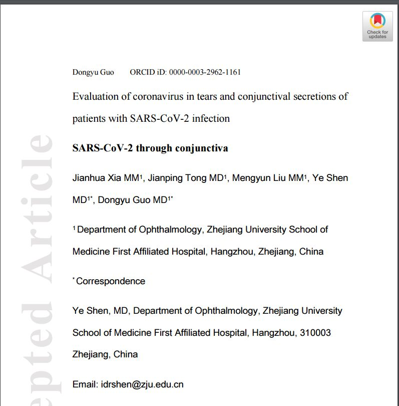

24例无症状新冠感染者研究：传染期最长超29天
原文链接 备份链接 澎湃新闻记者 贺梨萍 张若婷 可查资料显示，“钻石公主”游轮上1723名接受检测的旅游者中，有189名是无症状新冠病毒感染者。这显然暗示：在人群中存在着大量的无症状感染者或者症状轻微患者，但他们未被发现。 日前，南京市 …
柯溢能 / 微信公众号“浙江大学”
新冠病毒除了呼吸道传播以外，是否还有其他途径，这一直是科研人员关心的热点问题。
2月26日，浙江大学医学院附属第一院副院长、眼科学科带头人沈晔教授团队，在《医学病毒学杂志》（Journal of Medical Virology）在线发表了一项研究工作，揭示在研究的新冠肺炎患者样本中，存在一名结膜炎患者的眼泪和结膜分泌物样本，在核酸检测中出现病毒阳性结果。

该研究第一作者为夏建华，共同通讯作者为沈晔、郭东煜。论文第一单位为浙江大学医学院附属第一医院。
沈晔介绍，研究不同的传播方式，对于把握新冠病毒传染规律，改进疾病治疗方法和防控措施具有重要意义。
浙大科研人员从1月26日至2月9日在浙江大学医学院附属第一医院确诊的30例新冠肺炎患者，对他们的泪液和结膜分泌物混合物开展研究。在第一阶段6例样本研究中，均未发现核酸检测病毒阳性。团队果断认为，已有样本并不具有代表性与全面性，为此需要延长观察周期，继续留在隔离病房开展采样与研究。
研究团队在一位新冠肺炎患者身上发现，该病人左眼具有结膜炎症，即新冠引起的红眼病，而右眼没有此症状。而在此前的了解中，该患者入院前无结膜炎。本次研究中的其他患者样品核酸检测均为阴性。

研究样本
“这位患者眼部的差异性非常具有代表性，在征得同意后，我们就研究结膜炎症是否与病毒具有联系。”通过核酸检测，浙大研究人员发现患有结膜炎的左眼新冠病毒检测为阳性，而右眼则是阴性。为确保研究准确性，对两只眼睛的结膜分泌物做了三次核酸检查，结果均一致。
目前该患者通过抗病毒综合治疗，整体治愈的情况下，结膜炎症也转好，再次检测眼部病毒转阴。对于患者是如何因新冠病毒发生眼部结膜炎症的，科研人员表示仍在持续研究。
沈晔介绍，通过这项研究可以得出以下结论：1、患者左眼结膜炎与新冠病毒有关；2、存在眼部传染新冠病毒的风险；3、呼吸道可能不是新冠病毒传播的唯一途径。
沈晔表示，这项研究的现实意义在于提示医务人员在检查可疑病例时，除了佩戴口罩外，还需要佩戴护目镜。该研究为国家新冠病毒防控相关指南和标准的进一步完善提供科学依据。
“结膜就是我们通常所说的眼白的最外层，是眼睛与空气接触的隔离物，氧气可以在结膜吸收，参与代谢的屏障功能，其功能正常可以阻断细菌、病毒等病原体的侵入。”沈晔介绍，新冠病毒是否能找到人体免疫漏洞进入人体还有待于进一步研究，期待通过合作解开谜题。
该研究得到浙江省科技厅重大科技项目支持。
戳这里进入
“全国新型冠状病毒感染病例实时地图”↓↓↓
本期编辑 邢潭
推荐阅读


原文链接 备份链接 澎湃新闻记者 贺梨萍 张若婷 可查资料显示，“钻石公主”游轮上1723名接受检测的旅游者中，有189名是无症状新冠病毒感染者。这显然暗示：在人群中存在着大量的无症状感染者或者症状轻微患者，但他们未被发现。 日前，南京市 …
原文链接 备份链接 【财新网】（实习记者 何京蔚 记者 黄蕙昭）北京时间2月14日，加拿大安大略省卫生厅召开新闻发布会，通报当地新型冠状病毒肺炎疫情。发言人芭芭拉·亚菲(Babara Yaffe)表示，多伦多市确诊的两例新冠肺炎患者，临 …
原文链接 备份链接 澎湃新闻记者 张若婷 贺梨萍 新冠肺炎疫情暴发以来，各国科研团队对其飞沫、接触、气溶胶等传播途径高度关注， “能否感染结膜”也一度引发热议。当地时间2月11日，武汉大学人民医院陈长征研究组于预印本网站medRxiv（未 …
原文链接 备份链接 一则好消息：儿童或在新冠疫情中幸免于难。迄今尚未看到儿童因新冠病毒感染而死亡的报道。 据中国疾控中心 2 月 17 日数据，在确诊的 44672 例患者中有 0.9% 为 9 岁以下婴幼儿，约为 400 例；19 岁 …
原文链接 备份链接 早在 2 月 4 日，吉利德的 2843 箱瑞德西韦药物就已经运抵北京，时至今日人们却听到了入组患者太少的消息，“人民的希望”被浇了一头冷水。 瑞德西韦是被世界卫生组织认为是目前唯一可能抗击新冠病毒的药物。“人民的希 …